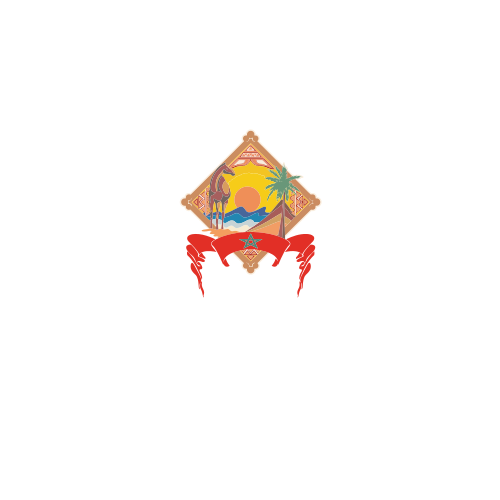
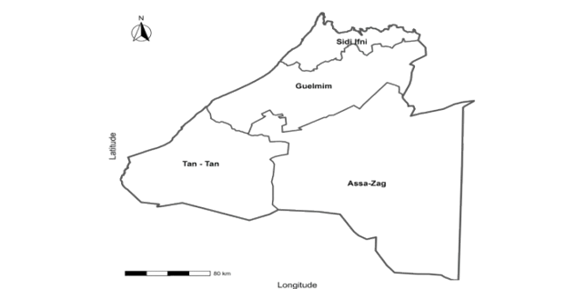

Région Guelmim-Oued Noun
Cette plateforme présente une lecture territoriale structurée de la région de Guelmim-Oued Noun. Elle met en valeur son identité géographique, son évolution démographique, ses dynamiques économiques et sociales, ainsi que les projections futures avec l'analyse et la prédiction.


Présentation de la région
La région de Guelmim-Oued Noun est située au sud du Royaume du Maroc. Elle constitue un espace de transition entre les régions du centre du pays et les provinces du Sud. Elle regroupe principalement les provinces de Guelmim, Assa-Zag, Tan-Tan et Sidi Ifni.
Grâce à sa position géographique, la région joue un rôle stratégique dans la mobilité des populations, les échanges économiques et l’organisation territoriale du sud marocain. Elle dispose également d’un potentiel important lié au commerce, aux services, à la pêche, à l’élevage, au tourisme et aux activités économiques locales.
Évolution et dynamique territoriale
Au cours des dernières années, Guelmim-Oued Noun a connu une transformation progressive marquée par l’amélioration des infrastructures, le développement des équipements publics et le renforcement de l’accès aux services de base. Cette évolution concerne notamment les domaines de l’éducation, de la santé, du logement et des infrastructures urbaines.
Sur le plan démographique, la région présente des dynamiques liées à la structure par âge, à la répartition de la population et aux mouvements migratoires. Ces indicateurs permettent de mieux comprendre les besoins territoriaux actuels et futurs.
Sur le plan économique et social, l’évolution de la région peut être observée à travers la création de richesse, le développement des établissements économiques, l’emploi, la réduction des disparités territoriales et l’amélioration progressive des conditions de vie.